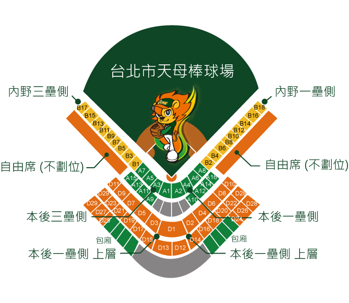

台北市天母棒球場 |
|
| 簡介 | |
| 天母棒球場位於天母地區忠誠路與士東路口，是天母運動公園的一部份。天母棒球場的工程自 1997年開始，原設計為可以容納二萬席的職業用球場，但是在當地居民的反對與斡旋下，變更設計為六千人的社區型球場，球場於 1999年落成啟用。 2001年台北市成為第 34屆世界盃棒球賽主辦城市，為達到國際賽事場地標準，特別在內野外緣兩側增建四千席，成為一萬席的場地。中華代表隊在十一月十八日擊敗日本隊勇奪世界盃銅牌，天母棒球場的歷史意義在這一天建立。 在經過職棒聯盟與台北市政府及當地居民的多次協調後，職棒終於在睽違了六百餘多天後在 2002年 5月 11日再度回到台北市，職棒從此正式在天母開打。配有大螢幕與電子看板的天母棒球場目前仍為台灣最新、最舒 適的球場，在與天母商圈的結合下，迅速成為球迷看球的新天地。球團為了疏導當地交通，在捷運淡水線芝山站都備有接駁公車，以減輕天母商圈的交通壓力。 |
|
| 場內座位資訊 | |
|  | |
| 觀眾數：10,000 席 / 內野數：10,000 席 / 外野數：0 席 / 內野：草皮 右外野：325 英呎 / 左外野： 325 英呎 / 中外野：400 英呎 / 大螢幕：有 |
|
| 交通資訊 | |
| 台北市公車 | 淡水線芝山站下車，捷運站外有棒球專車直達棒球場；捷運接駁 紅15；淡水線士林站下車，捷運接駁 紅12。 |
| 台北捷運 | 203 , 268 , 279 , 285 , 602 , 606 , 616 , 645 , 645副 , 646 , 685 , 市民小巴11 , 天母棒球場站。 |
| 自行開車 | 中山高速公路台北交流道下，取重慶北路過百齡橋接中正路，直行至中山北路左轉（需迴轉）向北，於忠誠路右轉順行至大葉高島屋百貨公司 即可。 |
| 停車資訊 | 汽車：大葉高島屋百貨公司收費停車 1800 位、天母運動公園收費停車 361 位。 機車：大葉高島屋百貨公司免費停車 800 位、天母棒球場免費停車 600 位。 |